About me
Get to know me
Hi, I'm Abegail D. Antiquina! I'm 20 years from Situbo, Roxas, Zamboanga del Norte, passionate about finding joy in the simple moments of life. When I'm home you'll always find me in kitchen exploring new recipes and ideas, enjoying my favorite food and embracing what makes each day unique.
Interests
I have a strong fascination with adventure, whether it's exploring new places, trying something unfamiliar, or stepping outside my comfort zone. I enjoy the excitement that comes with discovering the unknown.
Hobbies
* Cooking-For me it is more than just preparing food, but it's a creative outlet where I can express myself.
* Listening music-It is a great way for me to relax and find inspiration, whether I'm cooking or just unwinding.
* Watching cooking shows-Is my favorite pastime, where I can learn new techniques, gain fresh ideas and deepen my love for the culinary arts.
* Gardening-Brings me peace and satisfaction as I nurture plants and watch them grow.
* Attending local events-Which I enjoyed, like in last March when I participated in the United Youth Movement in Sergio Osmena, where I connected with others and experienced new things.
My Photos
 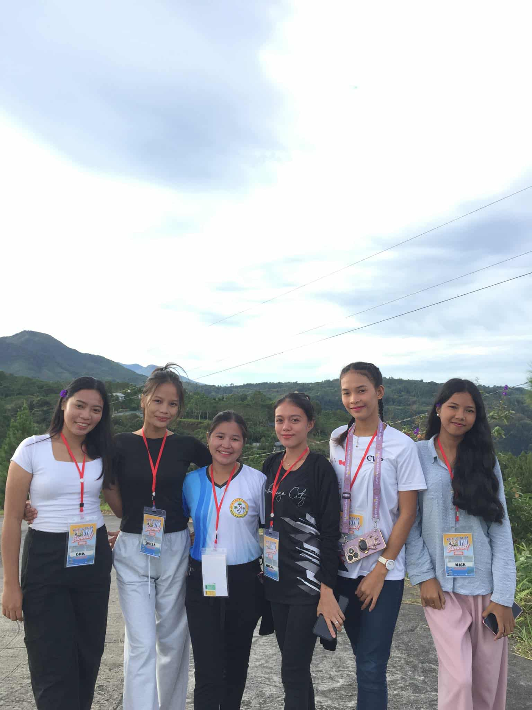
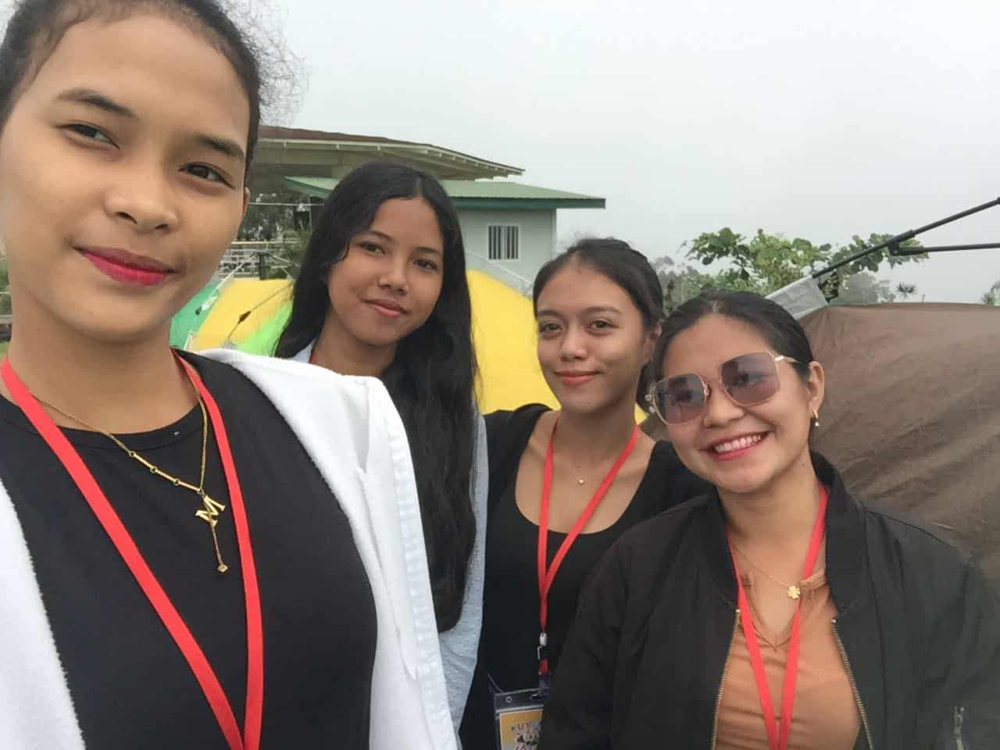
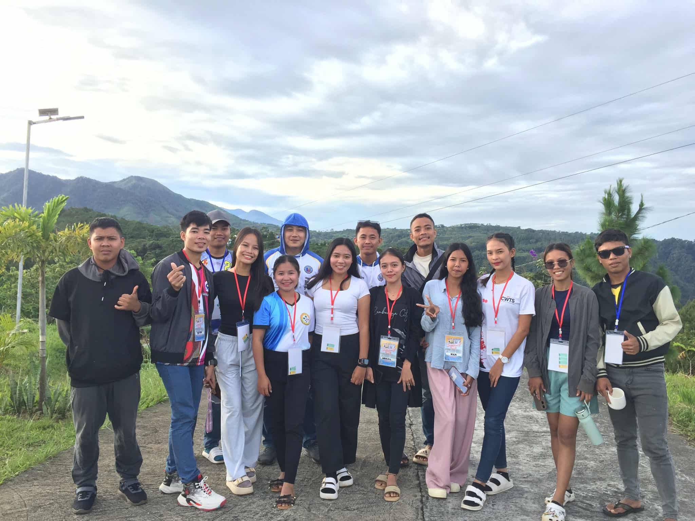
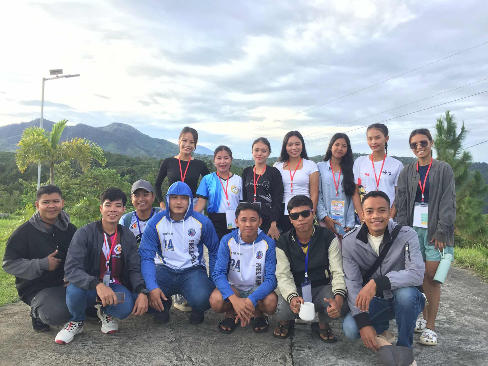
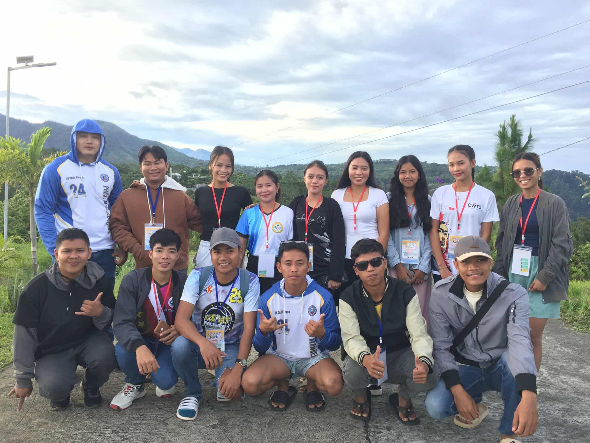
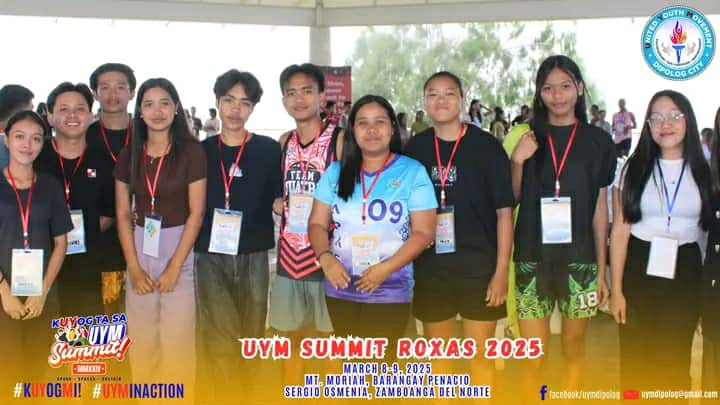
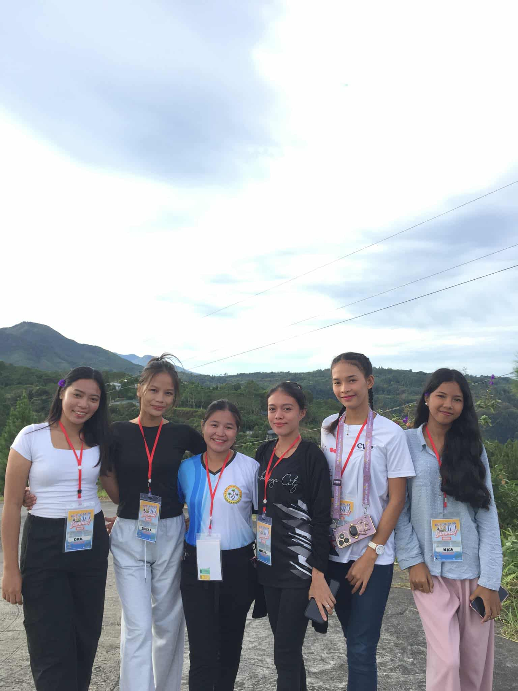
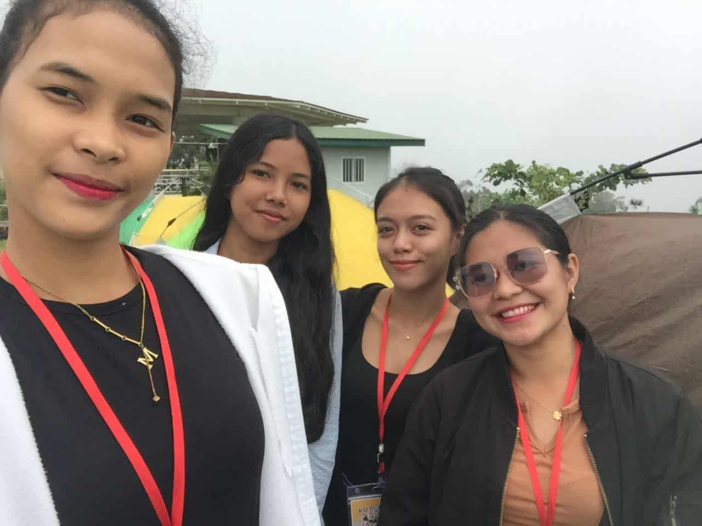
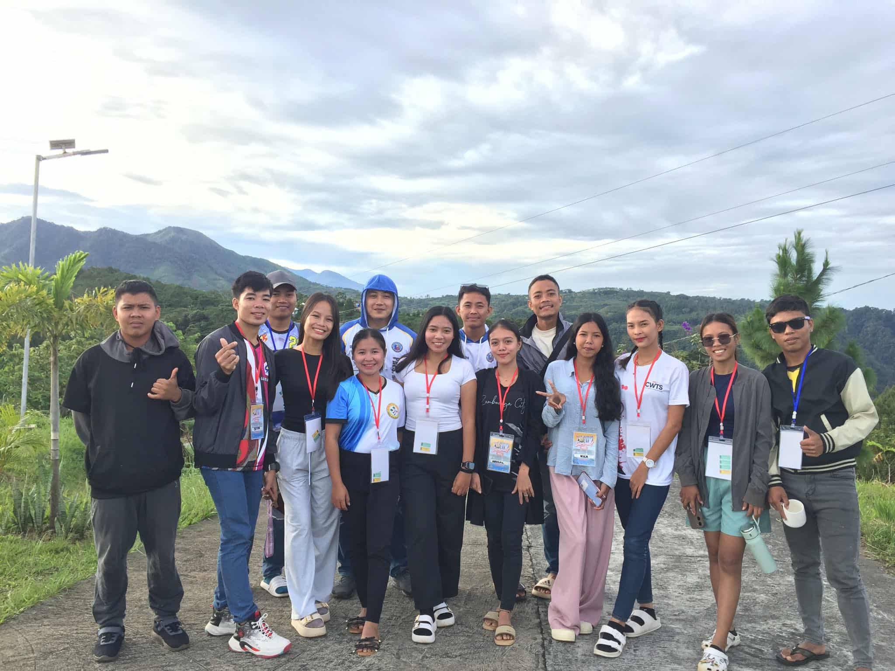
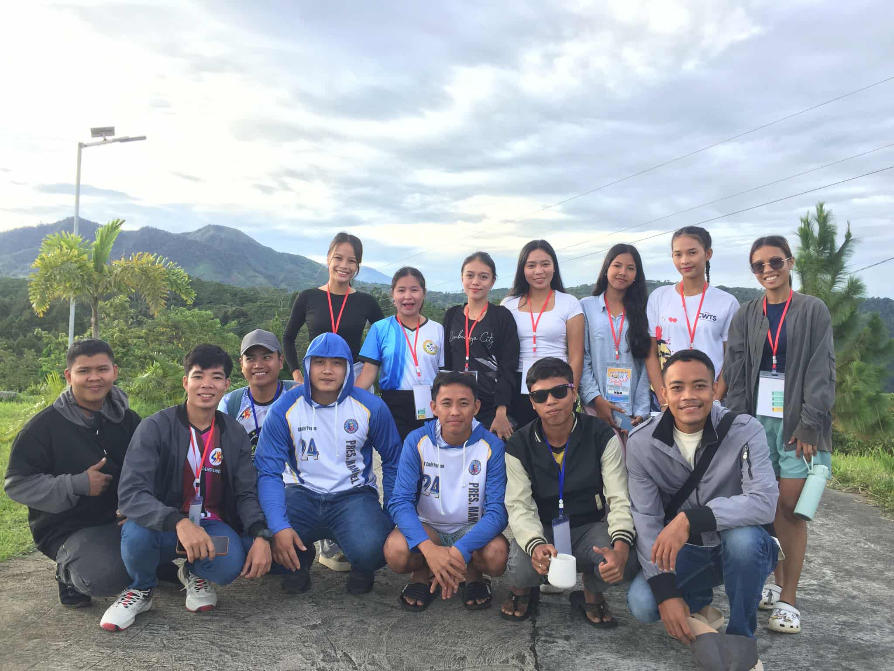
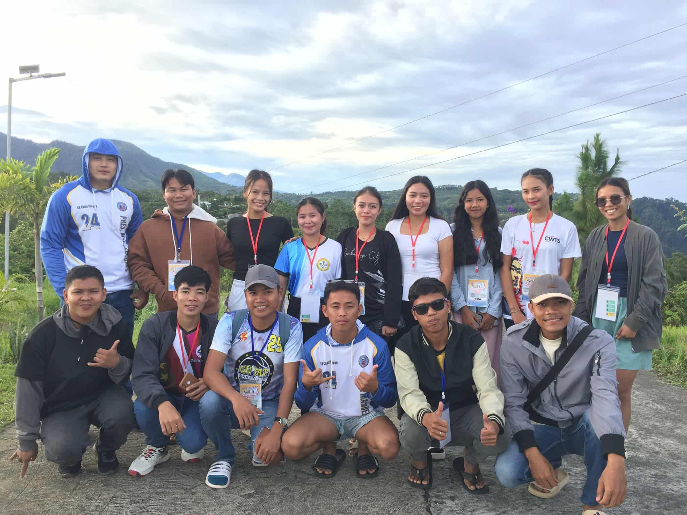
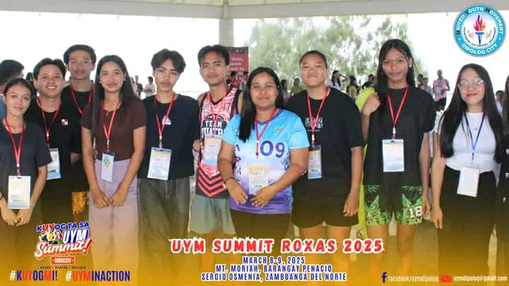